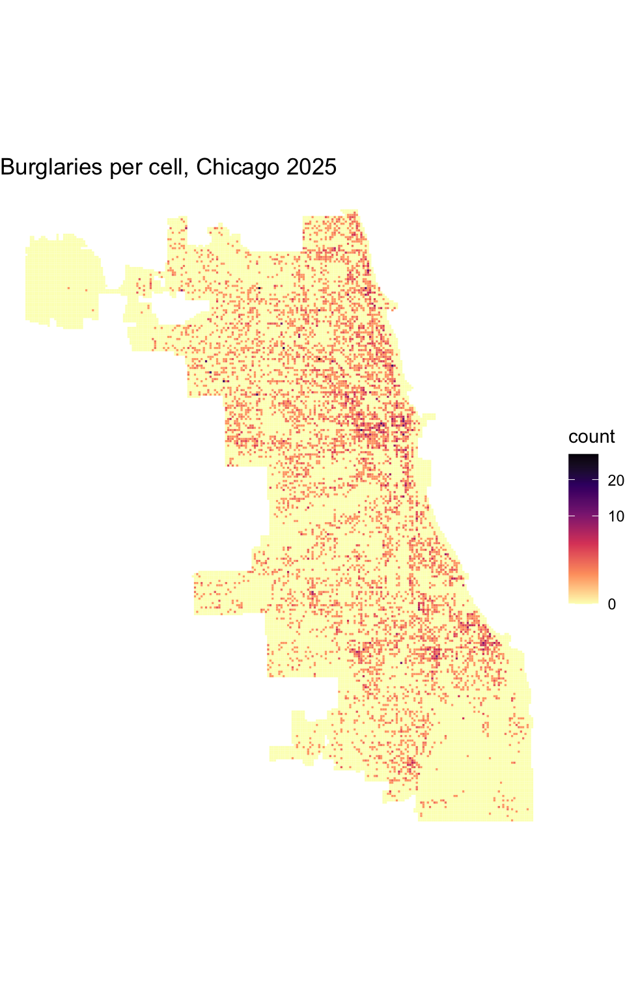
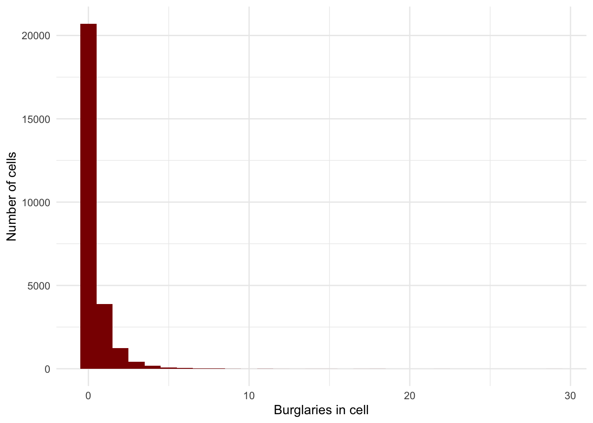
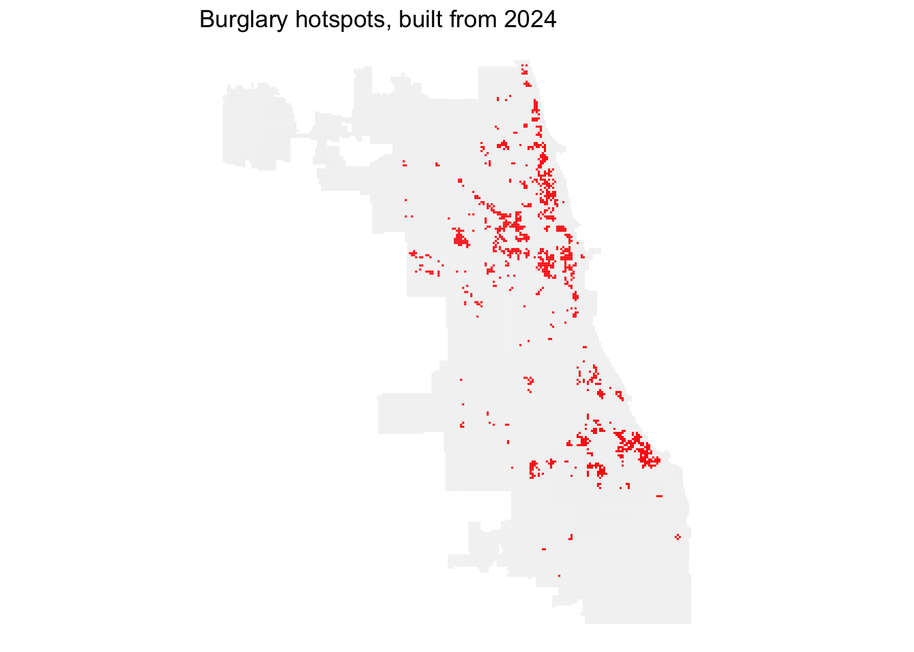
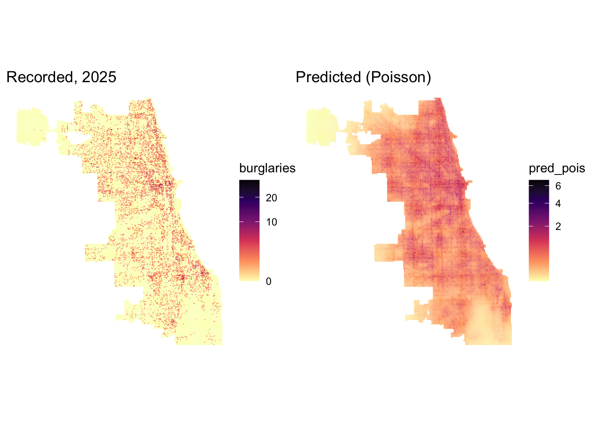
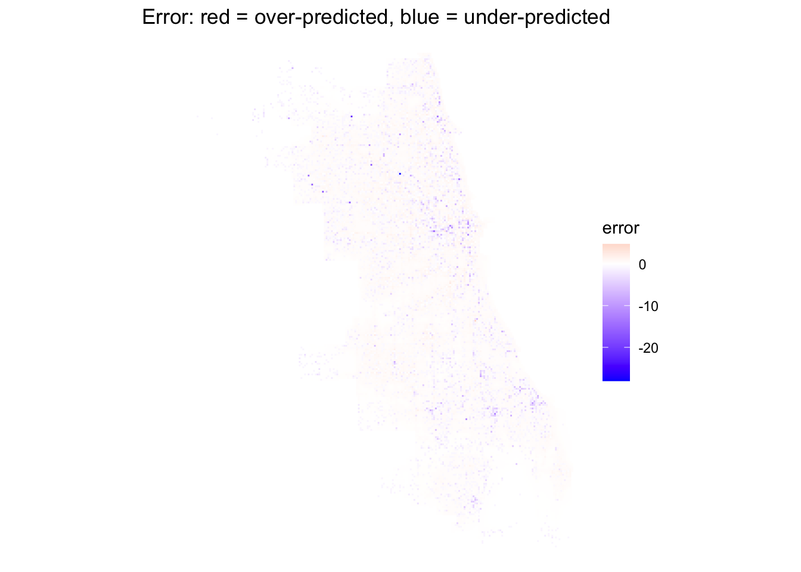

library(tidyverse)
library(sf)
library(spdep)
library(FNN)
library(tigris)
library(patchwork)
options(tigris_use_cache = TRUE)
options(timeout = max(300, getOption("timeout"))) # large public-data requests can be slow
# Chicago standard: Illinois East State Plane, US feet
crs_chi <- 3435
# Reuse completed public-data downloads; failed requests never become cache files.
download_cached <- function(url, filename, timeout = getOption("timeout")) {
cache_dir <- ".cache/chicago"
dir.create(cache_dir, recursive = TRUE, showWarnings = FALSE)
path <- file.path(cache_dir, filename)
if (!file.exists(path)) {
previous_options <- options(timeout = timeout)
on.exit(options(previous_options), add = TRUE)
tmp <- tempfile(tmpdir = cache_dir)
on.exit(unlink(tmp), add = TRUE)
download.file(url, tmp, quiet = TRUE)
if (!file.rename(tmp, path)) stop("Could not save download: ", path)
}
path
}Lab 9: Predicting Burglary in Chicago
MUSA 5080 · Week 9 · Ungraded
What you’re doing today
In class, we constructed a burglary model for Philadelphia. Now you rebuild it for Chicago, your new favorite city!
The rules are the same as in the slides:
- 2024 data builds the features
- 2025 burglaries are the outcome
This completed study version includes explanations alongside the analysis. Run the chunks from top to bottom: later steps depend on objects created earlier.
TipGetting Chicago data
This is the same Socrata portal as the last assignment, so the cheat sheet still applies:
- Put filter values in single quotes. They’re case-sensitive (
'BURGLARY', not'Burglary'). - Always set
$limit. Otherwise Socrata quietly stops at 1,000 rows. - Use
str_squish()on the where-clause, then download to a tempfile beforest_read(). That way you see the real error message if something goes wrong.
Part 0: Setup
The setup loads tools for tables, spatial geometry, neighbors, Census boundaries, and combined plots. EPSG 3435 measures coordinates in U.S. survey feet, so a grid size of 500 means 500 feet. Every layer must use compatible coordinates before spatial comparisons.
Completed downloads are kept locally in practice/.cache/chicago and reused on later renders, avoiding repeated large requests to an unreliable public server. These raw files are excluded from Git. Remove the corresponding cache file when you want to refresh a dataset; public records may change, so results below refer to the saved snapshot. The helper downloads to a temporary file first so an interrupted transfer is not reused as a completed download.
Part 1: Get the data
1A. The city boundary
chicago <- places("IL", cb = TRUE, progress_bar = FALSE) %>%
filter(NAME == "Chicago") %>%
st_transform(crs_chi)The boundary defines the study area. We retrieve Illinois places, retain Chicago, and transform the geometry into the measurement system used throughout the lab.
1B. Burglaries, 2024 and 2025
Here’s 2024, written out in full:
where_2024 <- str_squish("primary_type = 'BURGLARY'
AND year = 2024
AND latitude IS NOT NULL")
url_2024 <- paste0("https://data.cityofchicago.org/resource/ijzp-q8t2.geojson?",
"$where=", URLencode(where_2024, reserved = TRUE),
"&$limit=100000")
tmp <- download_cached(url_2024, "burglaries-2024.geojson")
burg_2024 <- st_read(tmp, quiet = TRUE) %>% st_transform(crs_chi)
nrow(burg_2024)[1] 8396Now write 2025 yourself:
where_2025 <- str_squish("primary_type = 'BURGLARY'
AND year = 2025
AND latitude IS NOT NULL")
url_2025 <- paste0("https://data.cityofchicago.org/resource/ijzp-q8t2.geojson?",
"$where=", URLencode(where_2025, reserved = TRUE),
"&$limit=100000")
tmp <- download_cached(url_2025, "burglaries-2025.geojson")
burg_2025 <- st_read(tmp, quiet = TRUE) %>% st_transform(crs_chi)
nrow(burg_2025)[1] 9666Question 1.1: Is either count exactly 1,000? What would that tell you?
Your answer: Our earlier run returned 8,396 records for 2024 and 9,667 for 2025. Neither is exactly 1,000, so neither appears truncated at the default limit. Exactly 1,000 would be a reason to check for truncation, not proof of it. Live portal records can change between runs.
1C. 311 requests, 2024
The 311 dataset is v6vf-nfxy. First, find out what the request types are actually called. Don’t guess the spelling.
params <- c(
`$select` = "sr_type, count(*) AS n",
`$where` = "created_date between '2024-01-01T00:00:00' and '2024-12-31T23:59:59'",
`$group` = "sr_type",
`$order` = "n DESC",
`$limit` = "100"
)
types_url <- paste0("https://data.cityofchicago.org/resource/v6vf-nfxy.csv?",
paste0(names(params), "=",
sapply(params, URLencode, reserved = TRUE),
collapse = "&"))
types_tmp <- tryCatch(
download_cached(types_url, "request-types-2024.csv", timeout = 30),
error = function(e) {
cat("Live request-type summary unavailable. Using the three category names verified earlier; counts are unavailable.\n")
NULL
}
)Live request-type summary unavailable. Using the three category names verified earlier; counts are unavailable.sr_types <- if (is.null(types_tmp)) {
tibble(sr_type = c("Abandoned Vehicle Complaint", "Street Light Out Complaint",
"Graffiti Removal Request"), n = NA_integer_)
} else {
read_csv(types_tmp, show_col_types = FALSE)
}
sr_types# A tibble: 3 × 2
sr_type n
<chr> <int>
1 Abandoned Vehicle Complaint NA
2 Street Light Out Complaint NA
3 Graffiti Removal Request NAFind the exact names for abandoned vehicles, street lights out, and graffiti removal in that list. Then pull each one for 2024:
get_311 <- function(type) {
where <- str_squish(paste0("sr_type = '", type, "'
AND created_date between '2024-01-01T00:00:00' and '2024-12-31T23:59:59'
AND latitude IS NOT NULL"))
url <- paste0("https://data.cityofchicago.org/resource/v6vf-nfxy.geojson?",
"$where=", URLencode(where, reserved = TRUE),
"&$limit=200000")
tmp <- download_cached(url, paste0(make.names(type), "-2024.geojson"))
st_read(tmp, quiet = TRUE) %>% st_transform(crs_chi)
}
abandoned_cars <- get_311("Abandoned Vehicle Complaint")
light_outages <- get_311("Street Light Out Complaint")
graffiti <- get_311("Graffiti Removal Request")
c(cars = nrow(abandoned_cars), lights = nrow(light_outages), graffiti = nrow(graffiti)) cars lights graffiti
49957 39147 99104 The category summary identifies exact service-request names. The function then retrieves individual 2024 reports in those categories. A report is not necessarily a distinct physical problem: repeated requests and differences in residents’ reporting behavior can affect these datasets.
Part 2: The fishnet
Pick your cell size now, before you see any results. The slides used 500 ft for Philadelphia.
cell_size <- 500 # in feet, because EPSG 3435 is in feet
fishnet <- st_make_grid(chicago, cellsize = cell_size, square = TRUE) %>%
st_sf() %>%
st_filter(chicago) %>%
mutate(cell_id = row_number())
fishnet <- fishnet %>%
mutate(burglaries = lengths(st_intersects(., burg_2025))) # 2025: the outcome
nrow(fishnet)[1] 26611The grid changes our unit of analysis from incidents to areas. Every retained cell stays in the table, including cells with zero incidents. st_filter() retains squares intersecting Chicago; it does not clip their edges to the boundary. Equal square area does not imply equal population, buildings, or exposure to burglary. Points on shared grid boundaries can intersect more than one cell, so intersect-based totals deserve a consistency check in a production analysis.
ggplot(fishnet) +
geom_sf(aes(fill = burglaries), color = NA) +
scale_fill_viridis_c(option = "magma", direction = -1, trans = "sqrt") +
labs(title = "Burglaries per cell, Chicago 2025", fill = "count") +
theme_void()
Question 2.1: Why a grid instead of Chicago’s 77 community areas? Give two reasons. - Finer detail can reveal patterns hidden within large community areas. - Equal-area cells standardize the geographic units being compared.
Question 2.2: Why did you pick that cell size? Name one thing that would change if you doubled it. I kept 500 feet to examine local, roughly block-scale variation rather than broad community-area averages. The squares do not follow actual block boundaries. Doubling the side length to 1,000 feet makes each cell four times as large, generally increasing counts per cell and reducing the proportion of zero-count cells. It reduces geographic detail, but does not necessarily reduce predictive accuracy; the original incident coordinates are still retained in the source data.
Part 3: Look at the outcome first
ggplot(fishnet, aes(burglaries)) +
geom_histogram(binwidth = 1, fill = "darkred") +
labs(x = "Burglaries in cell", y = "Number of cells") +
theme_minimal()
mean(fishnet$burglaries == 0) # share of zeros[1] 0.7781744c(mean = mean(fishnet$burglaries), variance = var(fishnet$burglaries)) mean variance
0.3631205 0.8836590 Question 3.1: What share of cells have zero burglaries? Give two reasons, from the slides, that OLS will struggle here.
In our earlier run, 77.8% of cells had zero recorded burglaries. OLS can produce negative expected counts, which are not meaningful here. Its usual constant-error-variance assumption may also poorly describe count outcomes, whose variability can increase with their expected value. Many zeros alone do not establish that OLS is invalid, and fractional expected counts are meaningful.
Question 3.2: Compare the mean and the variance. What does a Poisson model assume about them, and does Chicago meet that assumption?
Our earlier run gave a mean of 0.363 and variance of 0.884: the variance was about 2.4 times the mean. A Poisson distribution has equal mean and variance. Poisson regression assumes this equality conditional on its predictors. These raw results suggest possible overdispersion, but do not establish that the regression assumption fails: differences in expected counts between locations may explain some of the overall variation. We need to assess remaining dispersion after fitting the model.
Part 4: Features from 2024
Build one of each feature type. These are the same four types as in A4.
Each cell gets a representative center point. Counts measure reported activity inside a cell; nearest distances also recognize reports just across its boundary. The three-nearest average measures proximity to several reports, rather than only one. These are reports, so duplicate requests and differences in reporting behavior can affect the features. Distance to the Loop describes geographic position, not a causal effect of downtown.
centroids <- st_centroid(fishnet)
knn_dist <- function(from, to, k) {
nn <- get.knnx(st_coordinates(to), st_coordinates(from), k = k)
rowMeans(nn$nn.dist)
}
# The Loop: State & Madison
loop <- st_sfc(st_point(c(-87.6278, 41.8820)), crs = 4326) %>% st_transform(crs_chi)
fishnet <- fishnet %>%
mutate(
cars_cnt = lengths(st_intersects(., abandoned_cars)),
light_nn1 = knn_dist(centroids, light_outages, k = 1),
graffiti_nn3 = knn_dist(centroids, graffiti, k = 3),
loop_mi = as.numeric(st_distance(centroids, loop)) / 5280,
log_light_nn1 = log(light_nn1),
log_graffiti_nn3 = log(graffiti_nn3)
)Question 4.1: Why do we log the distances but not cars_cnt?
Logging distances compresses large values and makes equal proportional changes produce equal changes in the predictor: doubling from 100 to 200 feet has the same logged change as doubling from 1,000 to 2,000 feet. Keeping the count unlogged makes one additional report the relevant increment, holding other predictors constant. This is a modeling choice, not a rule that counts cannot be transformed. Logs require positive values; zero-count cells can stay in the unlogged count feature without a special adjustment. In Poisson regression, coefficients act on log expected counts, rather than adding directly to expected counts.
Part 5: The hotspot feature
Run LISA on 2024 burglaries and keep only the significant High-High cells.
A high-count cell surrounded by low counts is High-Low, an isolated spatial outlier. We want High-High cells: above-average counts with above-average neighboring counts. Eight nearest centroids define each neighborhood, and row-standardized weights form a neighbor average. The permutation test assesses the local pattern under randomization assumptions; the p-value is not the probability that a place is dangerous. The 0.05 cutoff below is unadjusted for the many local tests, so this is an exploratory hotspot screen.
fishnet <- fishnet %>%
mutate(burg_2024 = lengths(st_intersects(., .env$burg_2024)))
nb <- knn2nb(knearneigh(st_coordinates(centroids), k = 8))
lw <- nb2listw(nb, style = "W")
set.seed(5080)
lisa <- localmoran_perm(fishnet$burg_2024, lw, nsim = 499)
fishnet <- fishnet %>%
mutate(quadrant = attr(lisa, "quadr")$mean,
p_value = lisa[, "Pr(folded) Sim"],
hotspot = quadrant == "High-High" & p_value < 0.05)
table(fishnet$hotspot)
FALSE TRUE
25485 1126 ggplot() +
geom_sf(data = fishnet, fill = "grey95", color = NA) +
geom_sf(data = filter(fishnet, hotspot), fill = "red", color = NA) +
labs(title = "Burglary hotspots, built from 2024") +
theme_void()
hot_pts <- centroids[fishnet$hotspot, ]
stopifnot(nrow(hot_pts) > 0)
fishnet <- fishnet %>%
mutate(hotspot_dist_mi = knn_dist(centroids, hot_pts, k = 1) / 5280)This is distance to the nearest selected hotspot centroid, not to the nearest individual burglary or the edge of a hotspot polygon. A hotspot cell has distance zero to its own center. Using 2024 keeps the feature historical; it does not remove biases in which incidents were reported and recorded.
Part 6: OLS vs. Poisson
Both models use the same predictors and 2025 outcome. OLS models expected counts directly; Poisson uses a log link, keeping expected counts positive. These are fitted values on the training data, not predictions assessed on unseen outcomes. type = "response" returns expected counts rather than log expected counts.
f <- burglaries ~ cars_cnt + log_light_nn1 + log_graffiti_nn3 +
loop_mi + hotspot_dist_mi
ols <- lm(f, data = fishnet)
pois <- glm(f, family = "poisson", data = fishnet)
fishnet <- fishnet %>%
mutate(pred_ols = predict(ols),
pred_pois = predict(pois, type = "response"))
c(negative_ols = sum(fishnet$pred_ols < 0),
negative_pois = sum(fishnet$pred_pois < 0)) negative_ols negative_pois
2232 0 tibble(term = names(coef(pois)),
beta = coef(pois),
exp_beta = exp(coef(pois))) %>%
mutate(across(where(is.numeric), ~ round(.x, 3)))# A tibble: 6 × 3
term beta exp_beta
<chr> <dbl> <dbl>
1 (Intercept) 2.38 10.8
2 cars_cnt 0.006 1.01
3 log_light_nn1 -0.208 0.812
4 log_graffiti_nn3 -0.291 0.748
5 loop_mi -0.007 0.993
6 hotspot_dist_mi -0.709 0.492For an unlogged predictor, exp_beta is the expected-count multiplier for a one-unit increase, holding the other predictors fixed. For a logged distance, doubling that distance multiplies the expected count by 2^beta. Associations do not establish that changing an outage, complaint, or hotspot would cause the modeled change in burglary.
# A rough post-fit dispersion diagnostic; spatial dependence also matters.
pearson_dispersion <- sum(residuals(pois, type = "pearson")^2) / df.residual(pois)
pearson_dispersion[1] 2.092881A value well above one flags remaining extra-Poisson variation. This is a diagnostic, not a complete model check or proof that a negative binomial model will predict better.
In the checked run, this value was 2.09, suggesting remaining overdispersion after accounting for these predictors. This strengthens the reason to investigate a negative binomial alternative, while leaving predictive performance to be assessed separately on held-out outcomes.
Part 7: Predicted vs. recorded
Compare broad patterns, but also read the legends: the two maps below choose their color limits separately. Matching colors need not represent matching counts. The error map uses predicted minus recorded counts, so red means overprediction and blue means underprediction. RMSE summarizes count errors across all cells and penalizes large errors strongly; here it measures in-sample fit.
p1 <- ggplot(fishnet) + geom_sf(aes(fill = burglaries), color = NA) +
scale_fill_viridis_c(option = "magma", direction = -1, trans = "sqrt") +
labs(title = "Recorded, 2025") + theme_void()
p2 <- ggplot(fishnet) + geom_sf(aes(fill = pred_pois), color = NA) +
scale_fill_viridis_c(option = "magma", direction = -1, trans = "sqrt") +
labs(title = "Predicted (Poisson)") + theme_void()
p1 + p2
fishnet <- fishnet %>% mutate(error = pred_pois - burglaries) # positive = over-predicted
ggplot(fishnet) +
geom_sf(aes(fill = error), color = NA) +
scale_fill_gradient2(low = "blue", mid = "white", high = "red", midpoint = 0) +
labs(title = "Error: red = over-predicted, blue = under-predicted") +
theme_void()
c(rmse_ols = sqrt(mean((fishnet$pred_ols - fishnet$burglaries)^2)),
rmse_pois = sqrt(mean((fishnet$pred_pois - fishnet$burglaries)^2))) rmse_ols rmse_pois
0.9109298 0.8953009 For a reproducible geographic check, the following summary uses explicitly defined, coarse geographic bands. They are descriptive regions, not official community areas. Summed errors can cancel, so read this alongside the cell-level map.
lonlat <- st_coordinates(st_transform(centroids, 4326))
error_regions <- fishnet %>%
st_drop_geometry() %>%
mutate(region = case_when(
lonlat[, 2] >= 41.90 ~ "North",
lonlat[, 2] < 41.85 ~ "South",
lonlat[, 1] < -87.68 ~ "West-central",
TRUE ~ "Central/lakefront"
)) %>%
group_by(region) %>%
summarize(recorded = sum(burglaries), predicted = sum(pred_pois),
net_error = sum(error), .groups = "drop")
error_regions# A tibble: 4 × 4
region recorded predicted net_error
<chr> <int> <dbl> <dbl>
1 Central/lakefront 1211 1000. -211.
2 North 3681 3452. -229.
3 South 4013 4306. 293.
4 West-central 758 906. 148.Question 7.1: Where in Chicago does the model over-predict? Under-predict? Describe the pattern in one or two sentences.
In the checked run, the coarse regional totals showed net overprediction in the South and west-central band, and net underprediction in the North and central/lakefront band. At cell level, errors were mixed within these regions: the map showed scattered strong underpredictions at high-count cells, while small positive predictions in zero-count cells contributed widespread overprediction.
Part 7B: Does it beat last year’s map?
Before any model, departments smoothed last year’s burglaries into a heat map and patrolled the hot parts. Your model has to beat that.
KDE is the simple historical baseline: each 2024 incident contributes to a smoothed intensity surface. The 1,000-foot bandwidth controls how broadly that contribution spreads. KDE values are intensities, not directly comparable to expected cell counts, but we can compare how the methods rank cells. We select each method’s highest-scoring cells and measure the share of 2025 incidents captured there. The rectangular window includes space outside the city, so the treatment of boundaries is simplified in this exercise.
library(spatstat.geom)
library(spatstat.explore)
bb <- st_bbox(fishnet) # use the fishnet's extent, so every cell centroid falls inside the window
win <- owin(xrange = c(bb["xmin"], bb["xmax"]), yrange = c(bb["ymin"], bb["ymax"]))
xy_2024 <- st_coordinates(st_filter(burg_2024, chicago)) # historical incidents inside the city
kde_2024 <- density(ppp(xy_2024[, 1], xy_2024[, 2], window = win), sigma = 1000) # 1000 ft
xy_cent <- st_coordinates(centroids)
fishnet$kde_2024 <- safelookup(kde_2024, ppp(xy_cent[, 1], xy_cent[, 2], window = win))You’ll probably see a warning about duplicated points. That’s expected: Chicago geocodes crimes to the block, not the address, so many incidents share coordinates.
Now take the top 10% of cells by each method and count how many of 2025’s burglaries fall inside:
capture_comparison <- fishnet %>%
st_drop_geometry() %>%
mutate(model_top = pred_pois >= quantile(pred_pois, 0.9),
kde_top = kde_2024 >= quantile(kde_2024, 0.9)) %>%
summarize(model = sum(burglaries[model_top]) / sum(burglaries),
kde = sum(burglaries[kde_top]) / sum(burglaries))
capture_comparison model kde
1 0.2668943 0.3046673Question 7B.1: Which method captured more of 2025’s burglaries in its top 10% of cells? By how much?
In the checked run, the model captured 26.7% of recorded burglaries, versus 30.5% for KDE. KDE captured more, by 3.8 percentage points. Thus, the added predictors did not beat the historical baseline on this measure, despite the model’s in-sample advantage. Live records can change; the table above is the result for the current run. The threshold selects approximately 10% of cells; ties can increase the selected share. This measures incident capture in selected areas, not count accuracy across all cells.
Question 7B.2: This comparison is rigged in the model’s favor. Explain why. (Hint: which of the two has already seen the 2025 data?)
The model’s coefficients were fitted using the same 2025 outcomes used to score it, while KDE was built only from 2024 incidents. The model therefore has an in-sample advantage even though its predictors come from 2024. A fair comparison needs outcomes held out from fitting and model selection, ideally using a historical training period and a later test year, with spatial validation where appropriate.
Question 7B.3: If the model only beats last year’s map by a little, what are you getting in exchange for its extra complexity and its extra sources of bias?
A small in-sample improvement offers weak evidence that the added complexity is worthwhile. The model can produce expected counts and summarize associations with several predictors, but it adds data collection, maintenance, modeling assumptions, and exposure to unequal 311 reporting. KDE also inherits biases in recorded burglaries. Before preferring the model, I would want a meaningful improvement on held-out outcomes and evidence that its predictions help the intended decision. Neither method’s predictive score establishes fairness or the benefit of directing patrols to selected areas.
Optional challenge (no points)
- Fit a negative binomial model with
MASS::glm.nb(), using the same formula. Compare its coefficients and RMSE to the Poisson model’s. Given what you found in Question 3.2, which one do you trust more? - Add one more 311 feature from the
sr_typeslist. Explain why you expect it to predict burglary before you look at whether it does.